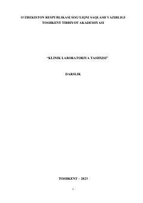

KLKlinik laboratoriya tashxisi va tahlil usullari bo'yicha tibbiyot oliy o'quv yurtlari talabalari uchun darslik.
Ushbu darslik klinik laboratoriya tashxisining asosiy usullari, jumladan peshob, najas, transudat va ekssudatlar, likvor, balg'am, shuningdek jinsiy yo'l bilan yuquvchi kasalliklar, virusli gepatitlar va gematologik tekshiruvlarga bag'ishlangan. Nashrda laborator tahlillarni o'tkazish tartiblari, patologik holatlar diagnostikasi va tahliliy testlar batafsil yoritilgan. Darslik tibbiyot oliy o'quv yurtlari talabalari, magistrlar va klinik ordinatorlar uchun mo'ljallangan.